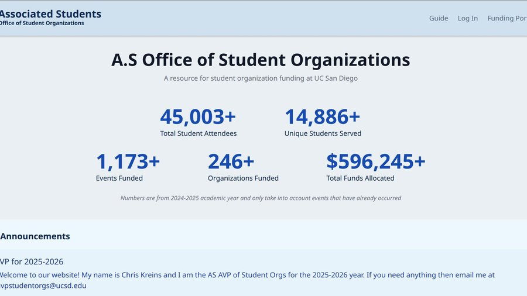

UC San Diego math, computer science, and linguistics — incoming CMU MS in software engineering, building inference infrastructure and firmware recovery tools outside of coursework.
This is where I write up projects I build outside of coursework, hardware and firmware experiments alongside software engineering work.
Recent focus has been GPU firmware recovery on Intel Arc cards, including BIOS flashing and GSC firmware recovery.
Django and Svelte web app for HKN, deployed on AWS, serving about 2300 monthly users.

Retrieval augmented chatbot using Pinecone and LangGraph for retrieval and GPT-4 for generation, built for Senate funding and reporting questions.
LLM-powered course planning assistant for UCSD students, using Neo4j and FAISS for retrieval to help map out class schedules based on major requirements.
Jupyter Notebook project comparing CuML (RAPIDS GPU-accelerated ML) against standard CPU implementations, run on A30 and V100 GPUs through UCSD's Datahub, with data compressed as tar.xz to fit storage quotas and results visualized across several notebooks.
Linguistics 168 (Computational Speech Processing) project using Hidden Markov Models to classify fruit names from audio pronunciation, using librosa for audio processing.